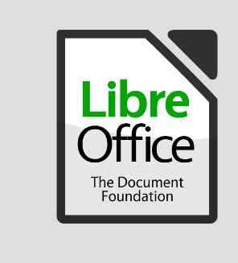

LibreOffice jest bezpłatnym pakietem biurowym, wywodzącym się z pakietu OpenOffice, obecnie rozwijany przez firmę Oracle. Pakiet od samego początku rozwijany był jako bezpłatna alternatywa dla MS Office i silnie inspirował się narzędziami oferowanymi przez Microsoft. Oznacza to, że bardzo wiele funkcji doskonale znanych z Worda czy Excela jest tutaj zrealizowana w bardzo podobny sposób, przez co przesiadka z jednego pakietu na drugi jest stosunkowo prosta. W skład pakietu wchodzą narzędzia w postaci:
1. Edytora tekstów - Writer
2. Arkusza kalkulacyjnego - Calc
3. Kreatora prezentacji - Impress
4. Edytora grafiki - Draw
5. Kreatora zapisów naukowych - Math
6. Edytora baz danych - Base
Oznacza to, że pakiet jest bardziej rozbudowany od podstawowej wersji MS Office. Tym, co poza ceną wyróżnia Libre Office, jest szerokie zaangażowanie społeczności w jego rozbudowę i ulepszanie, niestety połączone ze słabnącym zainteresowaniem projektem ze strony Oracle, co przekłada się na częste aktualizacje, ale też powszechne braki ze stabilnością. LibreOffice wykorzystuje inne formaty plików i pomimo tego, że formalnie obsługuje natywne formaty MS Office, w wielu przypadkach pojawiają się niestety problemy ze zgodnością, co może być szczególnie uciążliwe podczas pracy na plikach wykorzystujących dużo opcji formatowania tekstu.
Podsumowując, LibreOffice może stanowić bezpłatną alternatywę dla oprogramowania Microsoftu, jednak należy liczyć się z ryzykiem mniejszej stabilności oraz problemów związanych z niepełną zgodnością formatów. Niewątpliwą zaletą jest dostępność pakietu w systemach innych niż Windows, przez co pakiet ten zyskał bardzo dużą popularność wśród użytkowników Linuxa.
Źródła:
1. https://www.purepc.pl/oprogramowanie/libreoffice_bo_czy_jest_sens_placic_za_microsoft_office
2. https://www.dobreprogramy.pl/LibreOffice-czy-OpenOffice-ktory-darmowy-pakiet-biurowy-jest-lepszy,News,79480.html
Źródło grafiki:
https://cloud-systems.fr/index.php/2018/02/01/libreoffice-6-0-nouveau-suite-bureautique-opensource-gratuite/